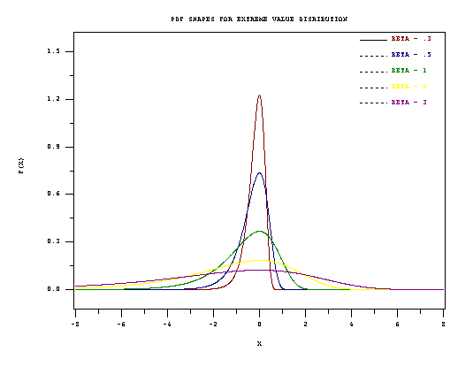

8.1. Introduction
8.1.6. What are the basic lifetime distribution models used for non-repairable populations?
8.1.6.3. |
Extreme value distributions |
The Extreme Value Distribution usually refers to the distribution of the minimum of a large number of unbounded random observations
We have already referred to Extreme Value Distributions when describing the uses of the Weibull distribution. Extreme value distributions are the limiting distributions for the minimum or the maximum of a very large collection of random observations from the same arbitrary distribution. Gumbel (1958) showed that for any well-behaved initial distribution (i.e., \(F(x)\) is continuous and has an inverse), only a few models are needed, depending on whether you are interested in the maximum or the minimum, and also if the observations are bounded above or below.
In the context of reliability modeling, extreme value distributions for the minimum are frequently encountered. For example, if a system consists of \(n\) identical components in series, and the system fails when the first of these components fails, then system failure times are the minimum of \(n\) random component failure times. Extreme value theory says that, independent of the choice of component model, the system model will approach a Weibull as \(n\) becomes large. The same reasoning can also be applied at a component level, if the component failure occurs when the first of many similar competing failure processes reaches a critical level.
The distribution often referred to as the Extreme Value Distribution (Type I) is the limiting distribution of the minimum of a large number of unbounded identically distributed random variables. The PDF and CDF are given by:
If the \(x\) values are bounded below (as is the case with times of failure) then the limiting distribution is the Weibull. Formulas and uses of the Weibull have already been discussed.
PDF Shapes for the (minimum) Extreme Value Distribution (Type I) are shown in the following figure.

- In any modeling application for which the variable of interest is the minimum of many random factors, all of which can take positive or negative values, try the extreme value distribution as a likely candidate model. For lifetime distribution modeling, since failure times are bounded below by zero, the Weibull distribution is a better choice.
- The Weibull distribution and the extreme value distribution have a useful mathematical relationship. If \(t_1, \, t_2, \, \ldots, \, t_n\) are a sample of random times of fail from a Weibull distribution, then ln(\(t_1\)), ln(\(t_2\)), ..., ln(\(t_n\)) are random observations from the extreme value distribution. In other words, the natural log of a Weibull random time is an extreme value random observation.
If the Weibull has the shape parameter \(\gamma\) and the characteristic life \(\alpha\), then the extreme value distribution (after taking natural logarithms) has \(\mu\) = ln(\(\alpha\)), \(\beta = \frac{1}{\gamma}\).
Because of this relationship, computer programs designed for the extreme value distribution can be used to analyze Weibull data. The situation exactly parallels using normal distribution programs to analyze lognormal data, after first taking natural logarithms of the data points.
We generate 100 random numbers from this extreme value distribution and construct the following probability plot.

For the example extreme value distribution with \(\mu\) = ln(200,000) = 12.206 and \(\beta\) = 1/2 = 0.5, the PDF values corresponding to the points 5, 8, 10, 12, 12.8. are 0.110E-5, 0.444E-3, 0.024, 0.683 and 0.247. and the CDF values corresponding to the same points are 0.551E-6, 0.222E-3, 0.012, 0.484 and 0.962.
Functions for computing extreme value distribution PDF values, CDF values, and for producing probability plots, are found in both Dataplot code and R code.